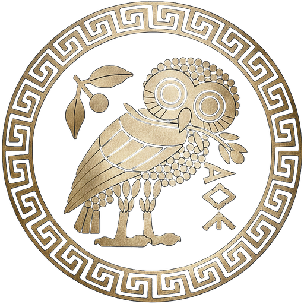
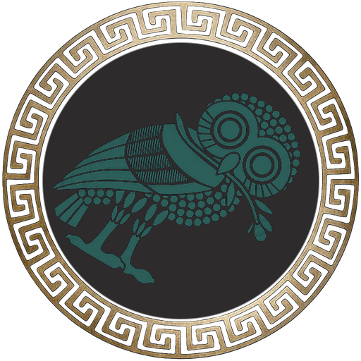

Owl Seal System — Background Color Comparison
All owls use TRANSPARENT PNGs. Only the CSS background-color behind each circle changes.
Row 1: Current — All on #0d1117 (the problem: green gets lost)
Normative

bg: #0d1117
Non-Normative

bg: #0d1117 — green lost
Critical

bg: #0d1117
Row 2: State-Matched — Deep Teal for Green, Deep Oxblood for Red
Normative
bg: #0d1117 (unchanged)
Non-Normative
bg: #17302d (deep teal)
Critical
bg: #2a1518 (deep oxblood)
Row 3: Warmer Teal, Warmer Oxblood
Normative
bg: #0d1117 (unchanged)
Non-Normative
bg: #1a3533 (warmer teal)
Critical
bg: #351a1e (warmer oxblood)
Row 4: More Saturated — Really Show the Color
Normative
bg: #0d1117 (unchanged)
Non-Normative
bg: #1f3f3b (rich teal)
Critical
bg: #3d1f23 (rich oxblood)
Row 5: State-Colored Rings (border matches state, not gold)
Normative
bg: #0d1117 / ring: #C8A878
Non-Normative
bg: #17302d / ring: #4A9D96
Critical
bg: #2a1518 / ring: #8B0000
Row 6: Neutral Charcoal for All (one background, three rings)
Normative
bg: #1a1a2e / ring: gold
Non-Normative
bg: #1a1a2e / ring: verdigris
Critical
bg: #1a1a2e / ring: crimson